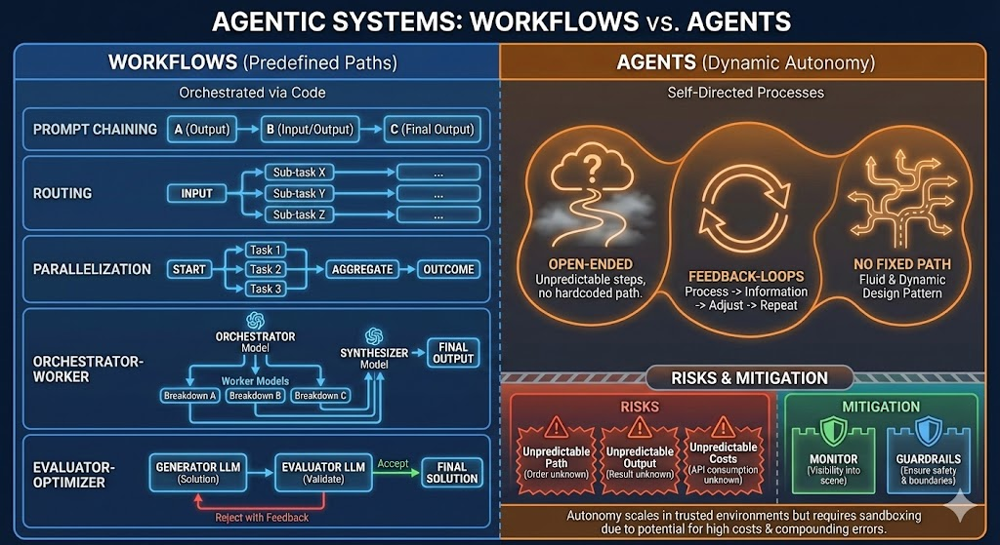

When building with LLMs, the choice between a predefined workflow and an autonomous agent depends on your requirement for predictability versus flexibility.
Workflows (Orchestrated Paths)
In a workflow, the system follows code-defined logic. This is ideal for production environments where reliability and latency are priorities.
Common Patterns
Prompt Chaining
Sequential sub-tasks where the output of one step becomes the input of the next. This creates a predictable, linear flow through your system.
Routing
Directing input to specialized handlers based on conditions or classification. This allows you to route different types of requests to the most appropriate processing path.
Parallelization
Running independent tasks simultaneously and then aggregating results. This pattern maximizes efficiency when you have multiple unrelated operations that can execute concurrently.
Orchestrator-Worker
Dynamic task decomposition and synthesis. An orchestrator model breaks down a complex task into smaller sub-tasks, distributes them to worker models, and a synthesizer model combines the results into a final output.
Evaluator-Optimizer
An iterative loop where one LLM generates solutions and another provides feedback for refinement. This creates a self-improving system that can iterate until it reaches an acceptable quality threshold.
Agents (Dynamic Autonomy)
Agents are used when the steps cannot be hardcoded. They utilize feedback loops to observe results and adjust their actions dynamically.
Pros
- Highly flexible: Capable of adapting to unexpected scenarios
- Open-ended problem solving: Can tackle complex problems without predefined paths
- Self-directed: Makes decisions autonomously based on context
Cons
- Less predictable: Outputs and paths can vary significantly
- Requires robust monitoring: Need visibility into agent reasoning and decisions
- Needs sandboxing: Must have boundaries to prevent unintended behavior
Core Characteristics
Open-Ended
Unpredictable steps with no hardcoded path. The agent explores solutions dynamically rather than following a predetermined sequence.
Feedback Loops
Process → Information → Adjust → Repeat. Agents continuously observe their environment, gather information, adjust their approach, and iterate.
No Fixed Path
Fluid and dynamic design pattern. The agent can take different routes to reach a solution based on what it discovers along the way.

Risks and Mitigation
Autonomy introduces variables that are difficult to manage at scale:
Risks
- Unpredictable Paths: The system may take unexpected routes, making it difficult to debug or reproduce issues
- Unpredictable Outputs: Results can vary significantly between runs, even with the same input
- Compounding Costs: Recursive loops can lead to high API consumption, especially if the agent gets stuck in iteration cycles
Mitigation
- Monitor: Implement visibility tools to track internal reasoning, decision points, and execution paths
- Guardrails: Establish strict boundaries to ensure the system remains safe, consistent, and within acceptable cost limits
Conclusion
Agents are powerful for open-ended, complex problems where flexibility is more important than predictability. They excel in scenarios where you cannot anticipate all possible paths or outcomes.
However, in many cases, a well-designed workflow is more reliable and more cost-efficient. Workflows provide:
- Predictable performance and latency
- Lower costs through controlled API usage
- Easier debugging and maintenance
- Better reliability for production systems
Key Takeaway: Choose workflows when you need reliability, predictability, and cost control. Choose agents when you need flexibility for truly open-ended problems, but always implement proper monitoring and guardrails.
Building Agentic Systems?
Need help choosing the right architecture for your LLM-powered application?
Let's Talk